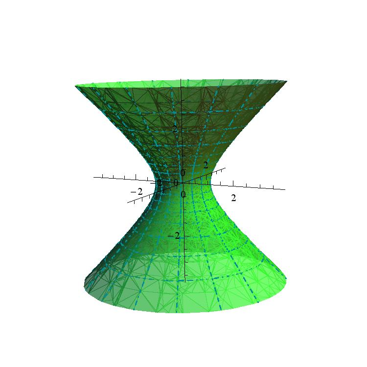
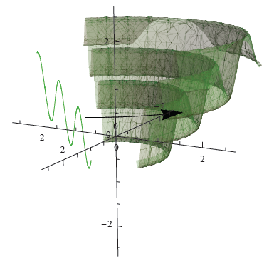
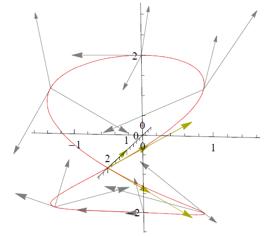
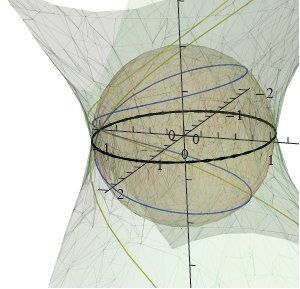
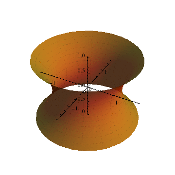

Ivo Terek
About me
I'm a Visiting Assistant Professor at the Department of Mathematics at the University of California, Riverside, having previously spent the 2024-2025 academic year at the Department of Mathematics and Statistics at Williams College. I got my Master's degree at University of São Paulo and my PhD degree at The Ohio State University; my PhD advisor was professor Andrzej Derdzinski. You can see my CV here.
- 
- 
- 
- 
- 
Research interests
- Differential Geometry: pseudo-Riemannian, Lorentzian, symplectic.
- Dynamical Systems: smooth dynamics, magnetic flows, hyperbolic systems.
As an undergraduate, I studied curves and surfaces in three-dimensional Lorentz-Minkowski space, and my Master's dissertation was about marginally trapped submanifolds in Lorentzian space-forms (which can represent event horizons of black holes in some spacetime models). After that, my PhD work was on compact pseudo-Riemannian manifolds with parallel Weyl curvature.
I am currently interested in relations between compactness and completeness in indefinite metric signature, in geometric conditions imposed on the Cotton tensor, and in the geometry and dynamics of magnetic systems.
Other activities
At Ohio State, I have provided some $\LaTeX$ support for distance learning courses made for the OSU Math Project with Earth Sciences and I have worked with the OSU Ximera team on online textbooks to be adopted in introductory courses. I was also one of the organizers of the OSU Mathematics Directed Reading Program and of the OSU Graduate Math Summer Mini-Courses.